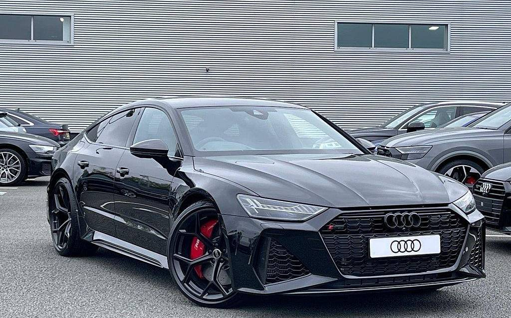
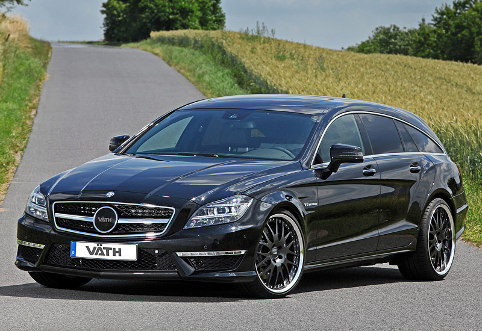
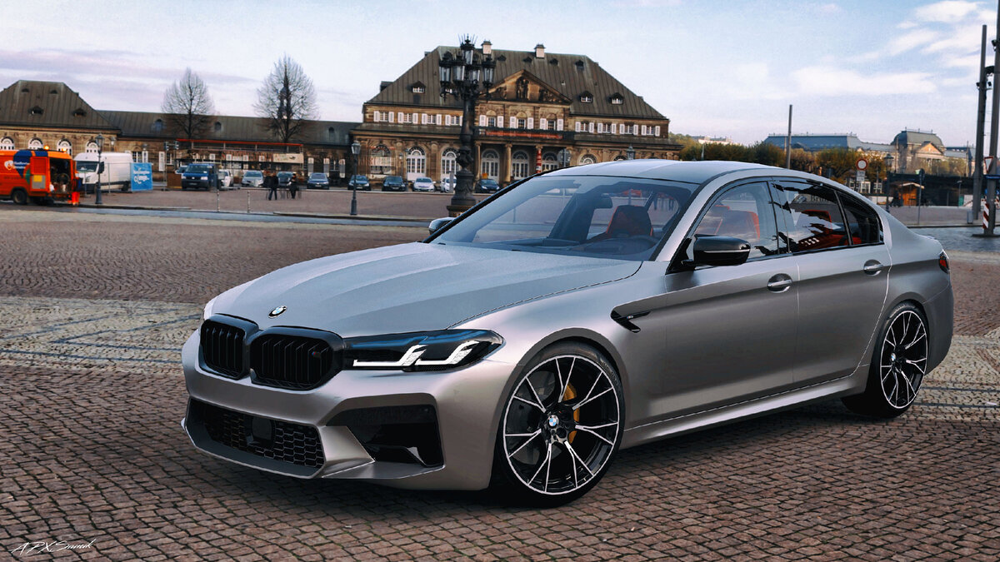
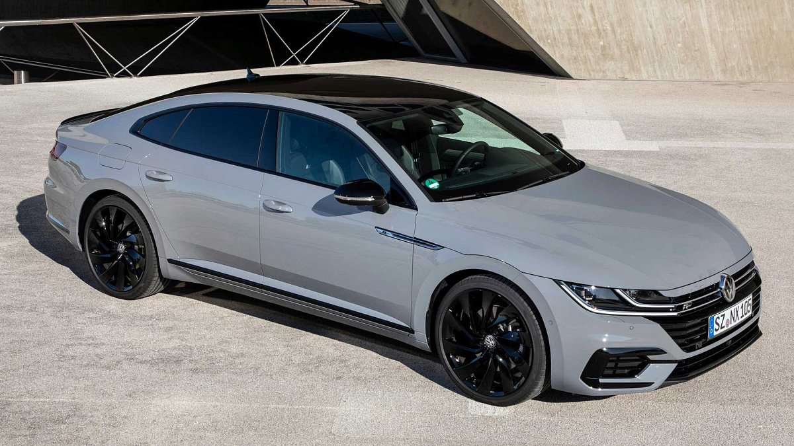

Audi Rs 7 2022
Цена 55.999$
Audi RS7 4.0 TFSI tiptronic quattro - технические характеристики
Передние шины 275/35 R21. Задние шины 275/35 R21.
Объем 4.0 л Мощность 600 л. с.
Расход 11,4 л Тип топлива Бензин АИ-95.
Трансмиссия АКПП Привод Полный (4WD)
Кол-во мест 4 места Кол-во дверей 5 дверей
Клиренс 140 мм Объем багажника 535 л

Mercedes benz Cls 63 Amg 2013 58.000$
Цена 69.999$
Mercedes-Benz CLS-Class CLS 63 AMG AT - технические характеристики
Передние шины 255/40 R18. Задние шины 285/35 R18.
Объем 6.2 л Мощность 514 л. с.
Расход 14,5 л Тип топлива Бензин Premium (АИ-98)
Трансмиссия АКПП Привод Задний (FR)
Кол-во мест 4 места Кол-во дверей 4 двери
Клиренс 150 мм Объем багажника 495 л

Bmw m5 f90 85.000$
Цена 88.999$
Габаритные размеры, масса и объемы
Длина, мм: 4965.
Ширина, мм: 1903.
Высота, мм: 1473.
Колесная база, мм: 2982.
Клиренс, мм: 132.
Снаряженная масса, кг: 1855.
Полная масса (максимально допустимая), кг: 2440.
Объем багажника, л: 530

Volkswagen Arteon r edition
Цена 35.000$
Основные параметры
Название комплектации 2.0 TSI 4Motion R-Line
Период выпуска 2021 -
Тип привода Полный (4WD)
Тип кузова Лифтбек
Тип трансмиссии РКПП 7
Объем двигателя, куб.см 1984
Марка кузова 3BA-3HDNUF
Страна сборки Германия
Число дверей 5
Расположение руля справа
Размеры